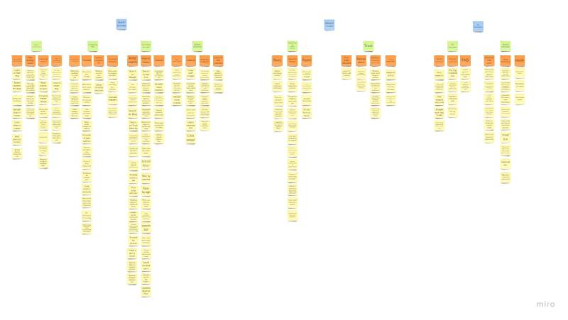

Milestone 2
Miro Link
Process
Each member was assigned to conduct a contextual inquiry interview with 2 individuals who are currently searching to adopt a new pet. After, those interview were broken down into separate yellow sticky notes to create the foundation for our Affinity Diagram. Which was then grouped and categorized and labeled with orange sticky notes. Green sticky notes were used to highlight high level work concepts when it comes to adopting a new pet, and finally the blue sticky notes details key issues, that informs behavior patterns.